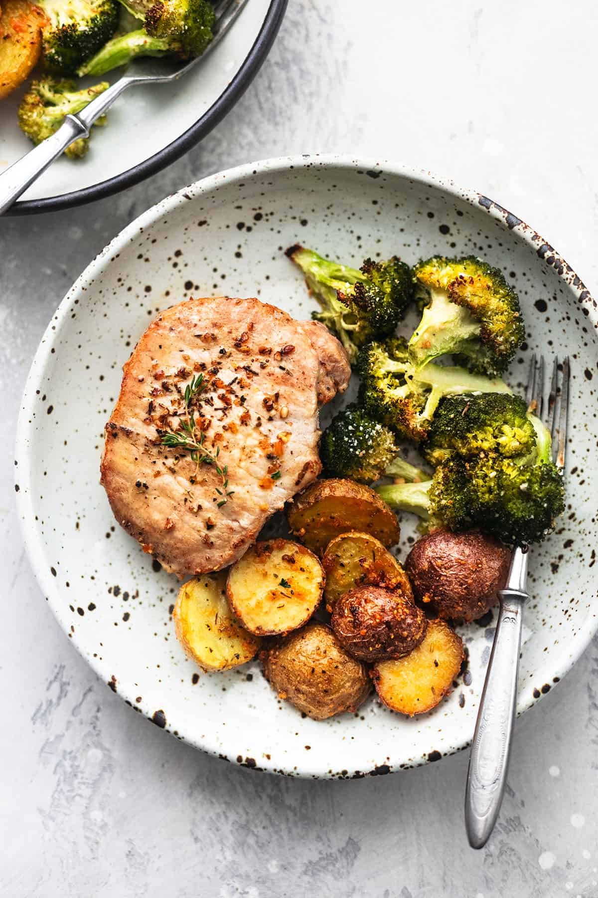

Pork Steaks And Veg

Description
This is an expertly crafted Pork Steak meal created by yours truly in university because I eat the same thing 3 days a week
This meal contains 2 simple ingredients
Ingredients
- Sainsbury's Pork Shoulder Steaks
- Sainsbury's Mixed Veg Frozen Bag
Steps
- Fry your pork steaks how you like em read the instructions on the packet if you are not sure
- Season pork steakd with salt and pepper and drizzle your cooking oil of choice over them
- preheat a pan and cook the steaks on them
- when there are 6 minutes left on the steaks get your veg boiling, ensure you have preheated the boiling water before this
- ENJOY!